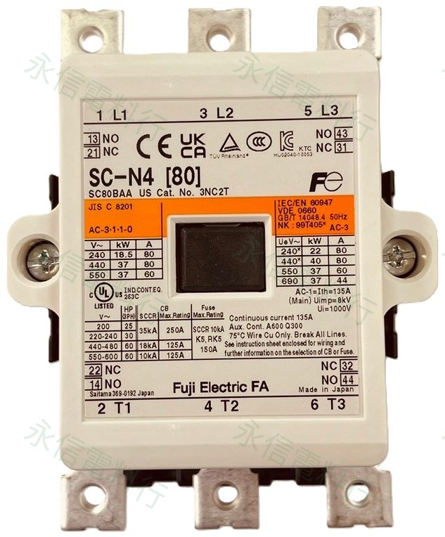

接觸器選型與控制盤維修涉及市電、馬達與高故障能量。實際更換前應斷電並由具備相關電氣作業能力的人員依原設備設計、負載條件與原廠資料確認。
工廠機台、自動控制盤、空壓機、抽水馬達、輸送設備與電熱控制系統都常見電磁接觸器。現場詢問時經常先問「這顆幾安培？」；但接觸器的安培數不能脫離負載種類與使用類別單獨解讀。

一、AC-1、AC-3 不是接觸器的品質等級
AC-1、AC-2、AC-3 等名稱屬於 IEC 60947-4-1 的 Utilization Category（使用類別），用來描述接觸器在不同負載與接通／分斷條件下的工作情境。它不是「AC-3 比 AC-1 高兩級」的品質排序，而是不同的負載任務。
二、AC-1：常見於電熱器等電阻性負載
工業電熱器、電熱管、電阻爐與部分加熱設備屬於較典型的 AC-1 應用。這類負載在穩定工作時，電流通常較接近額定工作電流，因此同一顆接觸器在 AC-1 條件下允許的額定工作電流，往往會高於 AC-3。
以 Schneider TeSys D 的 LC1D18F7 官方資料為例，同一型號在 440V 以下、環境條件符合資料表時，AC-3 額定工作電流為 18A，AC-1 則為 32A。因此看到「32A」不能直接解讀為「可以帶 32A 馬達」。
AC-1
重點是電阻性／低感性負載的接通與切斷條件。同一框架常可標示較高的額定工作電流。
AC-3
必須承受鼠籠式馬達啟動時的高電流，並在馬達正常運轉時分斷，因此額定值與 AC-1 不可直接互換。
三、AC-3：一般工業馬達控制最常見
AC-3 主要用於鼠籠式感應馬達的正常啟動，以及馬達進入正常運轉後再切斷。常見於抽水馬達、空壓機、風機、輸送帶、幫浦、攪拌機與一般機台馬達。
馬達啟動瞬間的電流會明顯高於穩態運轉電流，所以接觸器選型不能只拿馬達銘牌的正常運轉安培數去和任意一個接觸器安培數比較。原廠通常會直接提供 AC-3 額定電流與不同工作電壓下的馬達功率。
同樣以 LC1D18F7 為例，官方資料列出的 AC-3 馬達功率會隨電壓改變：220–230V 為 4kW、380–400V 為 7.5kW、415–440V 為 9kW。這也說明「10HP 接觸器」如果沒有同時說明電壓，資訊仍然不完整。
四、同一顆接觸器，AC-1 與 AC-3 不存在通用換算公式
不同型號、框架與系列的 AC-1／AC-3 額定比例並不固定，而且還可能受工作電壓、環境溫度、端子與安裝條件影響。因此不能自行訂一個「AC-1 除以 2 就是 AC-3」的公式。
正確做法是直接查該完整型號的原廠 AC-3 或 AC-1 額定資料。
五、馬達選接觸器，至少要一起確認這些條件
額定電壓與相數
確認單相／三相，以及 220V、380V、440V 等實際系統電壓。
馬達銘牌
核對額定電流、kW／HP、頻率與實際負載用途。
啟動方式
直接啟動、星三角、正反轉、頻繁點動等條件不同。
使用類別
一般馬達多先看 AC-3；頻繁點動與反轉則要留意 AC-4。
線圈電壓
AC220V、DC24V 等屬控制回路條件，和 AC-3 額定是兩件不同的事。
附件與安裝
輔助接點、積熱電驛、端子、外型尺寸與固定方式都要一起核對。
六、頻繁點動、正反轉時，條件可能進入 AC-4
有些設備不是「啟動後長時間運轉」，而是反覆啟動、停止、點動、反轉或反接制動，例如部分天車、定位機構與正反轉輸送設備。這類工作條件比一般 AC-3 嚴苛，接點電氣壽命也可能差很多。
所以一顆接觸器用在普通馬達可以使用多年，不代表放到高頻率點動設備仍有相同壽命。
七、變壓器與電容器，也不能直接套 AC-1 或 AC-3
AC-6a｜變壓器
變壓器送電瞬間可能產生高磁化湧入電流，因此 IEC 將變壓器投切獨立列為 AC-6a。
AC-6b｜電容器
電容器投入瞬間可能出現很大的湧入電流與高頻振盪，因此功率因數改善電容器盤應依 AC-6b 與電容器專用接觸器資料選型。
Siemens SIRIUS 3RT26 就是專為電容性負載設計的 AC-6b 接觸器系列。這類產品不應只用「安培夠不夠」來替換一般馬達接觸器。
八、AC-3 18A 和 Coil AC220V 是兩件完全不同的事
AC-3：18A 是主接點在特定使用類別下的額定工作條件；Coil：AC220V 則是接觸器線圈的控制電壓。兩者位於不同回路、描述不同規格。
同一系列可能有 AC24V、AC110V、AC220V、DC24V 或電子式寬電壓線圈版本。維修更換時只對「18A」而沒有確認線圈電壓，仍可能買錯。
九、跨品牌選型，先看負載，再看原廠額定表
現場常見 Fuji 富士電機 SC／SC-N／FMC、士林 S-P、Schneider TeSys、Siemens SIRIUS、ABB AF 等系列。品牌命名不同，但核心邏輯相同：先確認負載與使用類別，再依完整型號查原廠額定表。
Siemens 的資料也會把 3RT20 馬達型 AC-3、3RT23／3RT24 AC-1 以及 3RT26 AC-6b 電容性負載分開。跨品牌替換時，不能只比較外殼上最大的安培數。
十、更換舊接觸器時，建議準備哪些資料？
- 接觸器正面完整型號
- 線圈電壓與 AC／DC 標示
- 主接點端子與輔助接點編號
- 搭配的積熱電驛型號與設定範圍
- 馬達銘牌或實際負載資料
- 系統電壓、相數與控制電源
- 安裝尺寸、DIN 軌／螺絲固定方式
- 設備是否需要頻繁啟停、點動或正反轉
十一、快速記憶
結論：買接觸器，不要只問「幾安培」
接觸器選型不是「負載 20A → 找一顆寫 20A 的接觸器」。真正應先確認負載是馬達、電熱器、變壓器、電容器或其他設備，再核對工作電壓、使用類別、額定電流、操作頻率、線圈電壓與安裝條件。
同樣寫著「幾十安培」的接觸器，在不同 AC 使用類別下，可承受的負載可能完全不同。舊型接觸器更換時，保留完整型號、馬達銘牌與線圈電壓資料，會比只看外觀與安培數可靠得多。
RELATED PRODUCTS
網站相關接觸器商品
SC-N4 AC220V
查看完整型號、線圈規格與實物照片。實際馬達容量仍須依使用電壓與原廠 AC-3 額定資料核對。
查看商品 →
S-P21 AC220V
網站已整理線圈電壓、接點與 AC-3 系列資料；替換時仍應依馬達銘牌與完整型號確認。
查看商品 →
CN-100 AC220V
重載型交流接觸器商品頁；選型需同時核對線圈、主接點額定、輔助接點與負載條件。
查看商品 →永信電料行可協助規格核對
可依舊品完整型號、負載種類、馬達銘牌、線圈電壓與安裝方式，協助縮小電磁接觸器與相關控制元件的規格範圍。實際適用型號仍應以設備原始設計、現場負載條件與各品牌原廠型錄為準。
原廠核對資料
- ABB｜Utilization Categories for Contactors：列出 AC-1、AC-2、AC-3、AC-4、AC-5a／5b、AC-6a／6b 等 IEC 使用類別與典型負載。
- Schneider Electric｜LC1D18F7 Product Data Sheet：AC-3 18A、AC-1 32A，並列出不同電壓下的 AC-3 馬達 kW。
- Siemens｜SIRIUS 3RT Contactors Manual：說明 AC-1 電阻性負載與 SIRIUS 接觸器應用。
- Siemens｜SIRIUS 3RT26 AC-6b Capacitor Contactor：電容性負載專用 AC-6b 接觸器產品例。